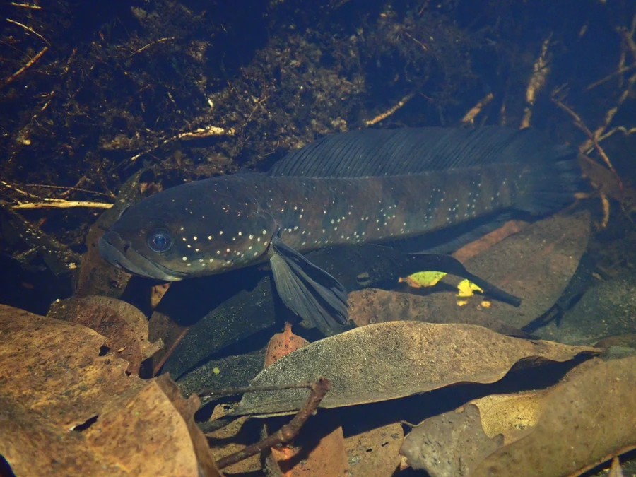

鱼类 · 动物界
月鳢 Channa asiatica

中国南方山涧溪流中的小型鳢鱼，体侧缀有珠色星点，夜间活动，能呼吸空气，常潜伏在石缝与水草间捕食小鱼虾。
- 分类
- 门脊索动物门纲硬骨鱼纲目鲈形目科鳢科属鳢属
- 栖息环境
- 中国南方的山涧溪流、沟渠、池塘与沼泽，喜清澈多石缝和水草的环境
- 地理分布
- 中国长江以南各地及台湾，以及越南北部
- 保护级别
- IUCN 暂无评估
物种志
月鳢体长一般 20–30 cm，最大约 40 cm，体重 200–500 g。身体前部圆筒形，后部侧扁，头略扁，口大；体色灰褐或黑褐，体侧散布许多珠色小星点，背鳍、臀鳍和尾鳍上有黑色与浅色相间的斑纹，尾鳍圆形。
它们分布于中国长江以南各地及台湾，也见于越南北部，栖息于山涧溪流、沟渠、池塘与沼泽，喜清澈、多石缝和水草的环境。月鳢多在夜间活动，白天藏在石缝、洞穴或水草中，捕食小鱼、虾、水生昆虫和蛙类。它同样具有鳃上器，可直接呼吸空气，耐低氧、离水后能存活较长时间。繁殖期在 4–6 月，亲鱼在水草间筑巢护卵。月鳢肉质细嫩，在华南被视为滋补食材，也有人工养殖。
形态与习性
- 食性小鱼、虾、水生昆虫和蛙类
- 体长20–30 cm，最大约 40 cm
- 体重200–500 g
- 繁殖4–6 月筑巢护卵
- 呼吸具鳃上器，可直接呼吸空气
- 别名七星鱼、山斑鱼
趣味知识
- 月鳢体侧散布珠色小星点，因此得了七星鱼、星鱼这样的俗称。
- 它白天躲在石缝里，夜里才出来捕食，性情比乌鳢温和一些。
- 与乌鳢一样，月鳢能直接呼吸空气，离水后仍可存活较长时间。